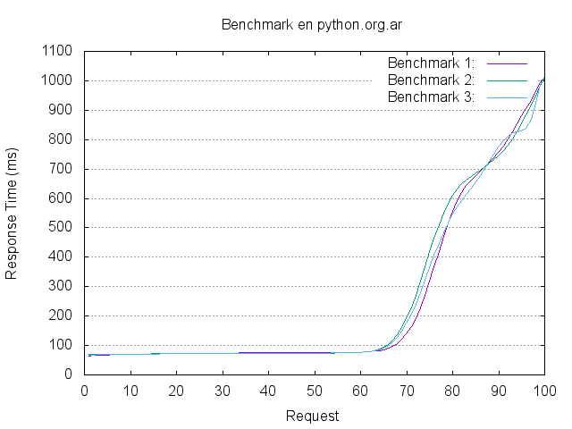

HowTo (stress)test a website with Apache Benchmark
Hoy por la mañana @reydelhumo queria probar un sitio que tiene en una raspy, yo le recomendé que use ab para hacer algunas pruebas básicas de load.
Usar ab es muy simple, pero es mucho más lindo poder hacer gráficos de los resultados, así que aproveché el momento para armar este post.
El objetivo es poder hacer varios tests contra una URL usando diferentes valores de concurrencia/cantidad de requests y gráficar la salida.
Primero hay que ejecutar las pruebas con ab:
ab -c 3 -n 100 -v 2 -g out1.tsv -H "Accept-Encoding: gzip,deflate" http://python.org.ar/
Esa configuración significa:
-c 3: concurrencia 3
-n 15: 15 request
-v 2: verbose (muestra los headers)
-g out1.tsv: salida para gnuplot
-H -H "Accept-Encoding: gzip,deflate" Hacer requests con gzip (igual que cualquier browser)
La idea es repetir N veces la prueba con los mismos parametros renombrando outN.tsv.
Yo ejecuté tres pruebas:
/tmp ll out*.tsv -rw-r--r-- 1 gilgamezh users 4934 Oct 31 11:26 out1.tsv -rw-r--r-- 1 gilgamezh users 4930 Oct 31 11:26 out2.tsv -rw-r--r-- 1 gilgamezh users 4936 Oct 31 11:27 out3.tsv
Cada una nos da una resumen con una salida, pero mucho mejor ver un gráfico. Con gnuplot es muy simple.
Yo uso un template que edito cada vez:
# output as png image
set terminal png
# save file to "benchmark.png"
set output "benchmark_python.org.ar.png"
# graph title
set title "Benchmark en python.org.ar"
# aspect ratio for image size
set size 1,1
# enable grid on y-axis
set grid y
# x-axis label
set xlabel "Request"
# y-axis label
set ylabel "Response Time (ms)"
# plot data from bench1.tsv,bench2.tsv and bench3.tsv using column 10 with smooth sbezier lines
plot "out1.tsv" using 10 smooth sbezier with lines title "Benchmark 1:", \
"out2.tsv" using 10 smooth sbezier with lines title "Benchmark 2:", \
"out3.tsv" using 10 smooth sbezier with lines title "Benchmark 3:"
Es un poco precario porque hay que editarlo a mano con el nombre de los .tsv. Algún día me voy a tomar el tiempo de automatizar todo. ;)
lo guardo como gnuplot.template y ejecuto:
gnuplot gnuplot.template
Y listo! tenemos nuestro gráfico. (sí hay que tener gnuplot instalado. en Arch el paquete se llama python-gnuplot)
Por ejemplo la conclusión de esta prueba es que python.org.ar necesita un caché de frontend :)
Comentarios
Comments powered by Disqus